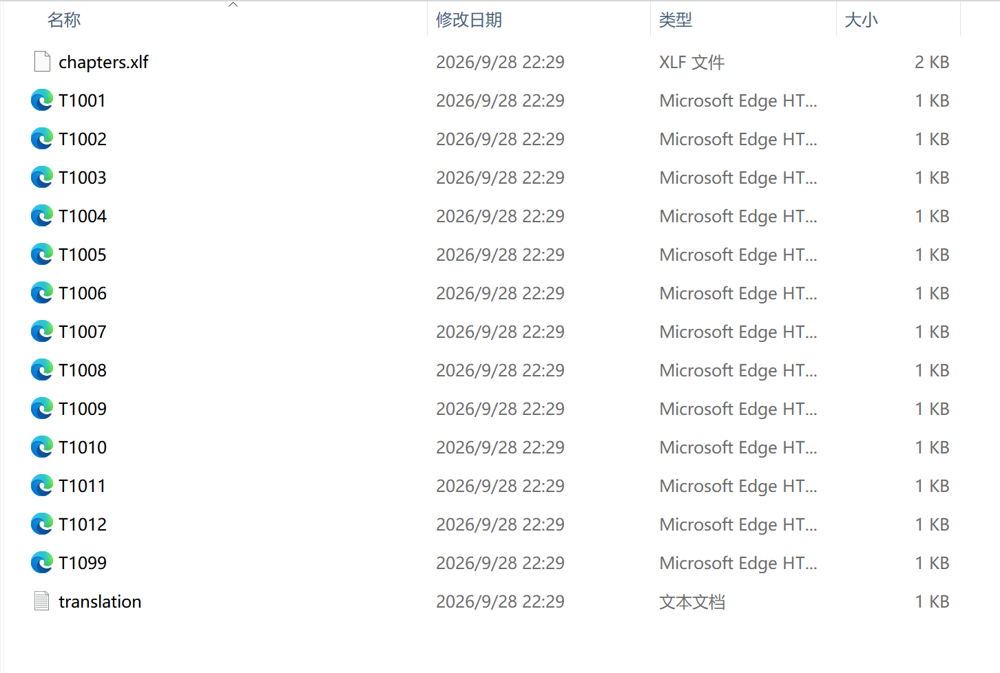
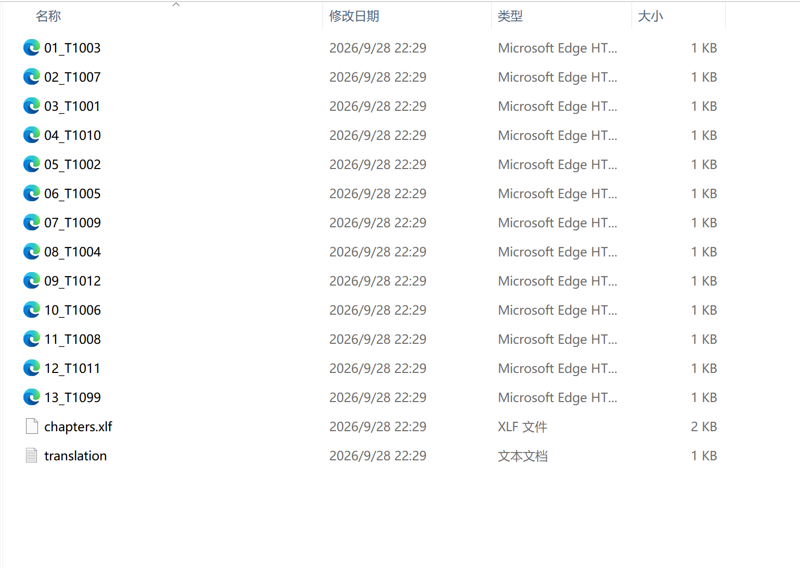
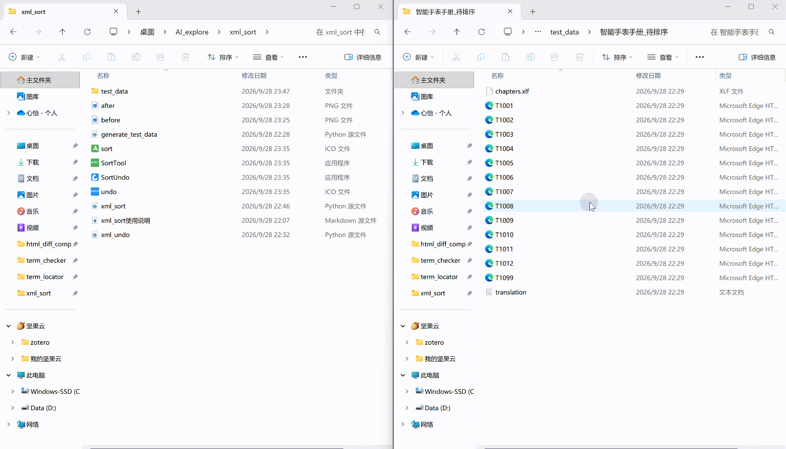

在文档本地化和翻译管理流程中，从翻译系统导出的 XML 文件通常以原始文件名命名，与手册目录架构不一致，存在以下痛点：
导出的 XML 文件命名不统一，无法按目录架构顺序排列
译员翻译时需手动定位各个 XML 文件在手册中的位置，无法按目录架构顺序进行翻译
传统 GUI 程序需手动输入文件夹路径和目标路径，操作繁琐耗时长；翻译完成后还要手动把文件名改回去
.xlf 目录架构文件，建立 XML 文件与目录架构的对应关系

文件按原始文件名排列，与手册目录架构顺序不一致，译员无法按目录顺序翻译

每个文件名前添加数字序号前缀（01_、02_……），与 XLF 目录架构顺序一致，资源管理器中按名称排序即为手册顺序

拖入文件夹 → 自动排序；翻译完成后再拖一次 → 自动还原
.xml 和 .xlf 文件）直接拖拽到 SortTool.exe 图标上，程序自动处理，完成后弹出提示框显示处理结果SortUndo.exe 图标上，自动去掉所有 XML 文件名前的序号前缀，恢复原始名称| 参数 | 说明 |
|---|---|
文件夹路径 | 包含待处理文件的文件夹路径（需同时含 .xml 与 .xlf 文件） |
目标文件夹中需同时包含以下两类文件：
| 文件类型 | 说明 |
|---|---|
*.xml | 待排序的 XML 文件，文件名需以 T 开头（如 T1001.xml） |
*.xlf | XLF 翻译文件，定义章节的目录顺序，是排序的依据 |
操作系统：Windows 7 及以上
依赖：无需安装 Python，SortTool.exe 与 SortUndo.exe 双击即可运行